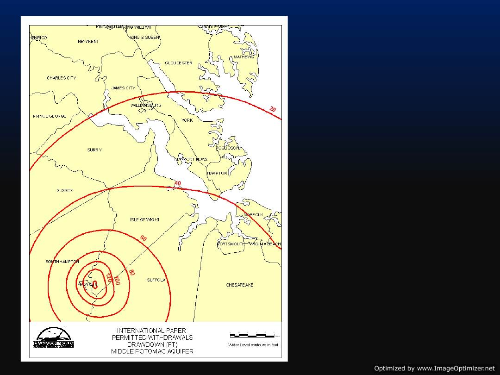

International Paper Closure:
Impact on Groundwater Resources
Presented to: Hampton Roads Planning District Commission
Presented by: Whitney Katchmark, P.E.
Senior Regional Geologist
November 18, 2009

Groundwater Withdrawal Permit
• All groundwater withdrawals over 10,000
gallons per day require a permit.
• International Paper holds the largest
withdrawal permit in the region.
• Permit allows IP to withdraw up to 37 million
gallons per day.
• In 2008, IP reported withdrawing 33 million
gallons per day.

Status of Permit
• International Paper’s permit expires January
2010.
• IP applied to renew its permit in the spring
and has not withdrawn its request for
renewal.
• Permit can be transferred to a new owner
with the consent of the State Water Control
Board.
• Permit must be amended if new owner wants
to use water for a different beneficial use.

• IP’s withdrawals
impact water levels
throughout the
region.
• USGS and DEQ
installed additional
equipment to
monitor the change
in water levels as IP
stops pumping.
Over Allocated Resource
Number of model cells violating DEQ’s technical criteria
With International Paper’s
withdrawals
Without International
Paper’s withdrawals
Yorktown-Eastover
3
1
Chickahominy-Piney Point
15
10
Aquia
22
12
Upper Potomac
2
0
Middle Potomac
12
5
Based on DEQ’s criteria, the groundwater system is
currently over allocated and will still be over allocated
when International Paper stops withdrawing water.

Groundwater Availability
• International Paper’s permit was never evaluated
based on the technical criteria because it was
grandfathered.
• A new permit for the same amount of water would
not pass the technical evaluation.
• Ideally, a new owner of the IP facility would use less
water than IP.
• Local governments should not expect all of the
groundwater permitted to IP to be available to renew
their groundwater withdrawal permits at the current
amounts or more.
Next Steps
• International Paper closure
– HRPDC staff can evaluate the groundwater issues
associated with economic development proposals.
• Regulatory Changes
– Groundwater Regulatory Advisory Panel has been meeting
since September to review the current regulations.
– HRPDC and USGS staff are analyzing the permitted
withdrawals with a new groundwater model published
this year.
– Staff will provide updates on regulatory changes that may
impact the permits held by local governments.